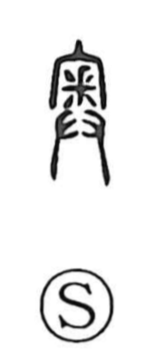

奥

Uncategorized
Kun: oku | On: ou
inner part ・ interior ・ depths
Explanation
The character combines three elements: under the roof of a ritual building (宀), a beast’s claw or paw is shown (釆), with the upper stroke suggesting the claw and the lower, rice-like pattern evoking the lines of the palm, while two hands held together in offering appear below (廾). Together they picture the innermost corner of a house where a sacred offering—the meat of a beast’s claw—was presented with both hands. From this image of the most secluded, consecrated recess, the character came to mean the inner part and, by extension, the depths.